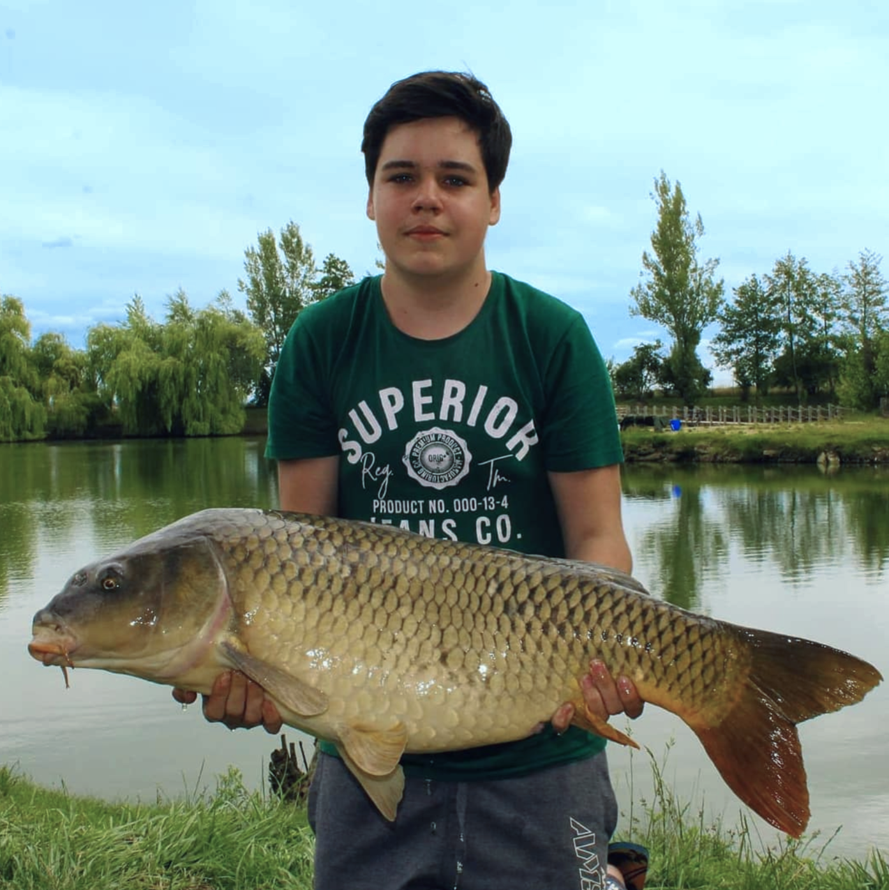

Zde se dozvíte jak dlouho chytám, co jsem se za tu dobu naučil a co se mi za moji kariéru povedlo.
Něco na začátek
Rybařit jsem začal v roce 2015, když mě rodiče přihlásili do kroužku ve Velké Bystřici, udělal jsem zkoušky a vyrazil na rybník, začátky byly těžké,
protože jsem měl špatnou výbavu a žádné zkušenosti, neuměl jsem ani moc nahazovat, takže jsem to měl často na stromě.
Avšak jsem se nevzdal a postupně zlepšoval, ze začátku mě učil rybařit táta.
Ještě ten rok jsem se vydal na své první závody, kupodivu jsem skončil sedmý, takže jsem měl radost.
Když už jsem pochopil základy, tak jsem se pak zlepšoval mnohem rychleji. Za rok nebo dva jsem závody vyhrál.

Od té doby jsem jezdil na závody často, avšak býval jsem nejčastěji čtvrtý, takže mi pohár vždy unikl jen o kousek, to se však v roce 2020 změnilo,
když jsem vyrazil na feederové závody do Tovačova, kde jsem se umístil na 3. místě dvakrát v jednom roce.
Zde jsou fotky z prvních závodů v Tovačově.
Zde je pohár z druhých závodů v Tovačově a vedle jsou všechny tři vedle sebe.


Od té doby jsem nebyl na mnoha závodech a když už náhodou byl, tak jsem opět býval na 4-7 místě. Tento rok mi bude 18, a tak bych chtěl jet na závody pro dospělé, ideálně s tátou.
Mé největší ryby
Mojí největší rybu je určitě Jeseter, který měřil 140 cm a vážil přes 20 kg.

Další mé největší ryby jsou opět jeseteři, pak následuje Amur Bílý, který měřil 110 cm a vážil přes 12 kg (nemám foto). Poté následuje asi Kapr, který měl 93 cm a vážil 13,5 kg.
Poté už následují ryby ze svazových vod, tam byla moje největší ryba sumec velký, měřil "pouhých" 74 cm. Následuje kapr a štika, ti měřili 64 cm.